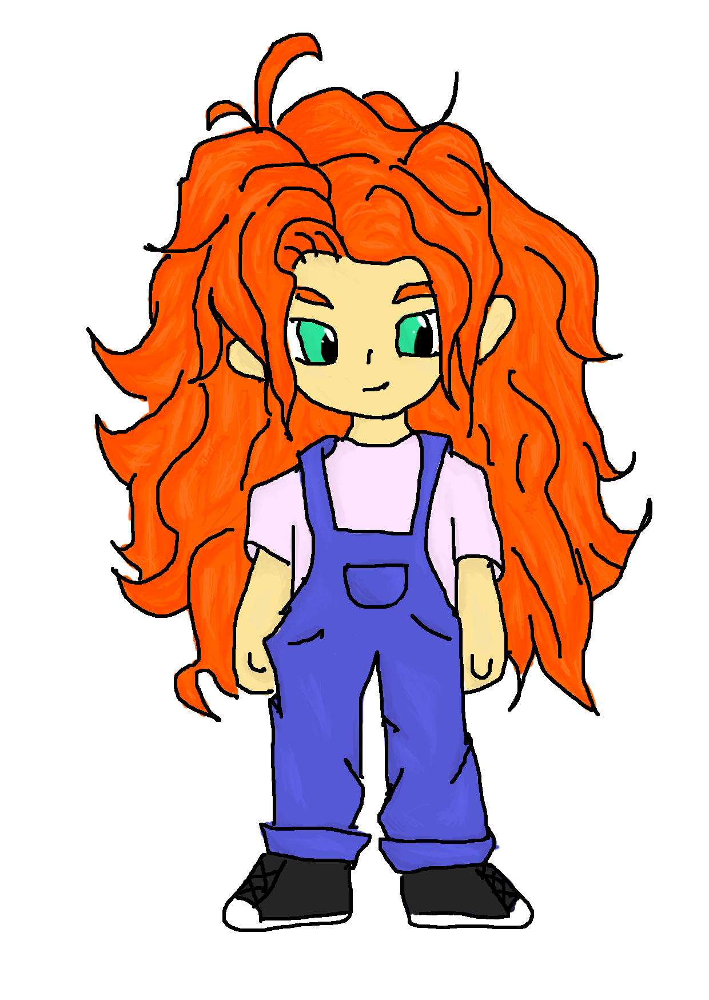
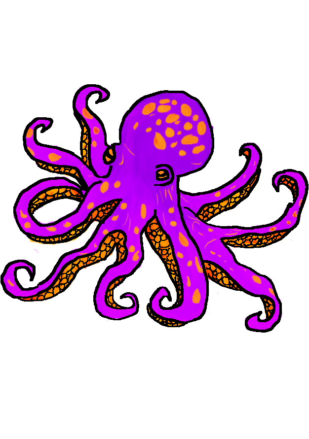
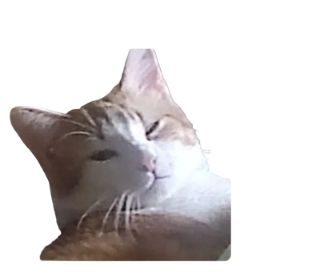
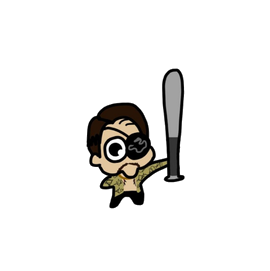
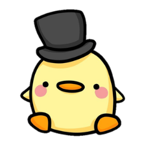
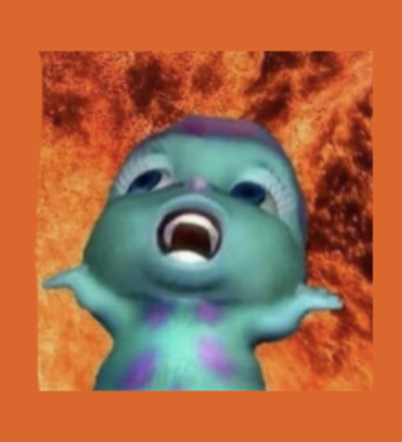
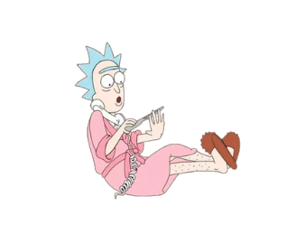

DESCUBRE EL SECRETO DE LA CIUDAD SUMERGIDA
El desastre ha dejado la ciudad patas arriba. Deberás ingeniártelas para atravesarla de maneras extrañas y sortear todo tipo de obstáculos. ¡La marea transformará los escenarios de formas impredecibles, así que necesitarás adaptarte a ella! Descubre un mundo en el que la frontera entre la superficie y el océano se hace cada vez más fina. Encuentra secretos, conoce a la población submarina y deslúmbrate ante la belleza de Trikata.


Noah
Nuestra protagonista, una niña de Trikata, que intentará desvelar el misterio de su ciudad.
.png)
Pache
La glotona mascota de Noah que le encanta el algodón de azúcar y siempre está atento a los misterios ocultos

Pol
Un amigable pulpo que ayudará a nuestra protagonista en su aventura.

Pez Globo
Un enemigo que dificultara la investigacion de nuestra protagonista
CONOCE AL EQUIPO
JORGE PÁJARO
Programador de la web,
compositor de la música y
apoyo en tareas varias.
Función hipotetica: Compositor de música y sonido,
diseñador de VFX y SFX y Community Manager.

JULIO LASERNA
Programación de la demo,
grabación y edición del trailer e
implementación de la fuente.
Función hipotética: Programador del juego
e interfaces.
Ingeniero de herramientas y de software.

ÁLEZ GONZÁLEZ
Programación de la web y
apoyo en tareas varias.
Función hipotetica: CEO de Corail Studios,
diseñador de niveles y programador del juego.

PATRICIA ORTIZ
Diseño de la estética del juego.
diseño de personajes, diseño de estructura,
fondos y elementos de la página web.
Función hipotéitca: Diseñadora gráfica, concept artist
y programadora.

NEREA MARTÍNEZ
Diseño de la temática, ambientación e historia del juego,
diseño de la fuente y
encargada de la red social.
Función hipotética: Programadora web y de gráficos
y guionista.

HECTOR GONZÁLEZ
Diseño de personajes, fondo,
fuente, banner, logo e elementos,
diseño de la historia y
encargado de la red social.
Función hipotética: Diseñador de personajes,
concept artist y guionista.